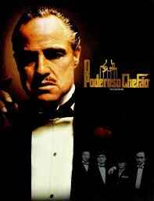

Top 10 Filmes
Por Ramon Luiz
Nome: Forrest Gump
Sinopse: A trama atravessa várias décadas na vida do personagem central, Forrest Gump, um homem simples do Alabama que, em suas andanças pelo país, acaba encontrando personalidades históricas, influenciando a cultura popular e testemunhando alguns dos eventos mais notórios da história dos Estados Unidos no final do século XX.
onde assistir: Telecine, Amazon prime, Mercado play.
Nota pessoal: 10/10
Nome: Onde vivem os monstros
Sinopse: O filme narra as aventuras de Max, um garoto de forte personalidade que foge de casa após uma briga com a mãe e acaba penetrado em seu mundo imaginário.
onde assistir: Amazon Prime.
Nota pessoal: 08/10
Nome: O poderoso chefão

Sinopse: É a primeira parte da trilogia The Godfather, narrando a família Corleone sob o comando do patriarca Vito Corleone entre os anos de 1945 a 1955; o filme se concentra na transformação de seu filho mais novo, Michael Corleone, de relutante forasteiro da família a implacável chefe da máfia.
onde assistir: Telecine, Paramount+, Amazon Prime.
Nota pessoal: 10/10
Nome: Arremessando alto
Sinopse: Um olheiro de basquete azarado encontra um jogador com um grande potencial e se esforça para mostrar ao mundo que os dois merecem chegar à NBA.
onde assistir: Netflix.
Nota pessoal: 09/10
Nome: Corações de ferro
Sinopse: Durante o final da Segunda Guerra Mundial, o sargento Don Wardaddy lidera um grupo de apenas cinco soldados norte-americanos encarregado de aniquilar os nazistas. Em um tanque de guerra Sherman, os homens enfrentam uma missão mortal. Apesar da desvantagem numérica, falta de armas e um soldado inexperiente, Wardaddy e seus homens se movimentam em um ataque espetacular no coração da Alemanha nazista.
onde assistir: Amazon Prime.
Nota pessoal: 09/10
Nome: Bastardos inglorios

Sinopse: Durante a Segunda Guerra Mundial, na França, judeus americanos espalham o terror entre o terceiro Reich. Ao mesmo tempo, Shosanna, uma judia que fugiu dos nazistas, planeja vingança quando um evento em seu cinema reunirá os líderes do partido.
onde assistir: Netflix, Amazon Prime.
Nota pessoal: 10/10
Nome: Tropa de Elite
Sinopse: O filme acompanha o capitão Nascimento, que busca um substituto para seu posto, enquanto dois amigos de infância se juntam à corporação, buscando a integridade e combatendo a corrupção.
onde assistir: Netflix, Amazon Prime, Globoplay.
Nota pessoal: 09/10
Nome: Django livre
Sinopse: No sul dos Estados Unidos, o ex-escravo Django faz uma aliança inesperada com o caçador de recompensas Schultz para perseguir os criminosos mais procurados do país e resgatar sua esposa de um fazendeiro que força seus escravos a entrarem em competições mortais.
onde assistir: Netflix, Amazon Prime.
Nota pessoal: 10/10
Nome: Scarface
Sinopse: Após receber residência permanente nos Estados Unidos em troca do assassinato de um oficial do governo cubano, Tony Montana se torna o chefe do tráfico de drogas em Miami. Matando qualquer um que entre em seu caminho, Tony eventualmente se torna o maior traficante da Flórida, controlando quase toda a cocaína que entra em Miami. Porém, a pressão da polícia, as guerras com cartéis colombianos e sua própria paranoia servem para alimentar as chamas de sua eventual queda.
onde assistir: Netflix, Amazon Prime.
Nota pessoal: 10/10
Nome: Ted
Sinopse: Quando criança, John desejou que seu ursinho Ted ganhasse vida e, surpreendentemente, foi atendido. Porém, agora que é adulto, ele precisa lidar com as consequências de seu pedido, já que Ted não vai parar de atormentar a sua vida.
onde assistir: Netflix, Amazon Prime.
Nota pessoal: 09/10